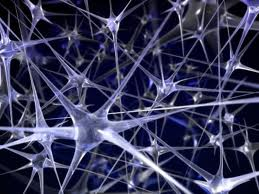
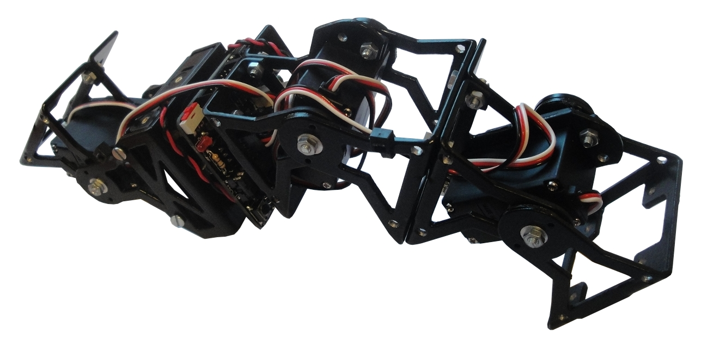
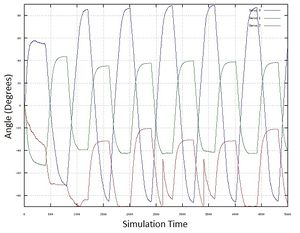
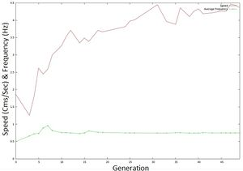
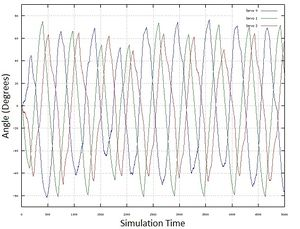
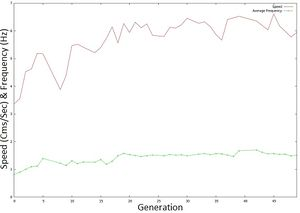
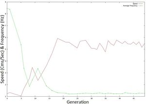
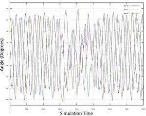

|
 |
 |
Paper reference
- Avinash Ranganath, Juan Gonzalez-Gomez, Luis Moreno Lorente (2011), "A Distributed Neural Controller for Locomotion in Linear Modular Robotic Configurations", Book chapter (VII), ISBN: 978-84-7484-238-8. Centro de automática y Robótica CSIC-UPM, pp. 129-144.
Abstract
Artificial Neural Networks (ANNs) are well known for oscillatory output when in a closed loop with the feedback from the system it is controlling. Here we propose a new neural controller for locomotion in linear modular robotic configurations, based on oscillatory output from simple ANNs. We investigate two different methods for controlling the action of each module based on the neural output, and also evolve neural controllers which have the ability to overcome external perturbations. We use a standard Genetic Algorithm (GA) for optimizing the synaptic weights of the ANN
Authors
- Avinash Ranganath, Juan González-Gómez, Luis Moreno Lorente
- Oral presentation: Avinash Ranganath
Download
| Avinash-et-at-MR-ANN-Robocity-May2011.pdf | Paper (PDF) |
| on-line | Paper On-line |
| Avinash-et-at-MR-ANN-Robocity-May2011.odt | Paper sources (Openoffice 3.2) |
| Avinash-et-at-MR-ANN-Robocity-May2011-figures.zip | Paper figures (SVG) |
| Avinash-et-at-MR-ANN-Robocity-May2011-slides.pdf | Slides, in PDF |
| Avinash-et-at-MR-ANN-Robocity-May2011-slides.odp | Slides, in Openoffice format (ODP) |
| on-line | Read the Slides on-line in Scribd |
Pictures
|  Figure 4 (Click to enlarge) |
 Figure 5 (Click to enlarge) |
 Figure 6 (Click to enlarge) |
|  Figure 7 (Click to enlarge) |
 Figure 8 (Click to enlarge) |
 Figure 9 (Click to enlarge) |
Videos
|
Direct link to the video in youtube
|


Links
News
- 2011/Jun/8th: This page is published!